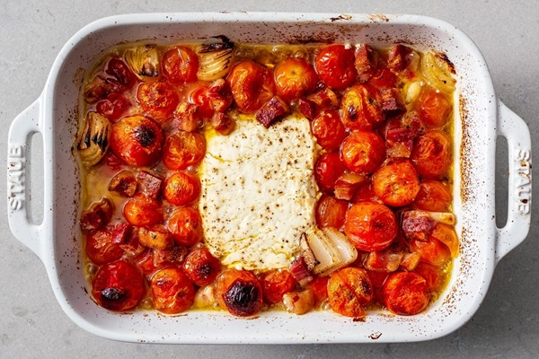

TikTok Pasta

A quick and easy weeknight meal!
The key to this recipe is to use Greek style feta. American feta will not melt properly when baked, so be sure to find feta that is labeled Greek.
Ingredients
- 1 block of Greek feta
- 1 lb cherry tomatoes
- 1/3 to 1/2 cup extra virgin olive oil
- 3 TBS Harrisa paste (optional)
- Basil, roughly chopped (use if omitting Harrisa)
- 4-6 garlic cloves, halved
- Ground pepper
- Chili flakes
Steps
- Preheat oven to 400°
- Add feta, tomatoes, garlic, and olive oil into a medium sized baking dish
- Spoon Harrisa (if using) over feta and tomatoes and mix it in
- Add pepper and chili flakes
- Place in oven and bake for 40 minutes
- Meanwhile, cook pasta in salted water and drain, reserving 1/2 cup of the pasta water
- When feta is cooked, remove from oven, add basil (if not using Harrisa), a small bit of pasta water, and mix well allowing some of the tomatoes to burst and forming an emulsion
- Add in pasta, mix well and serve, topping with some extra basil (if using)